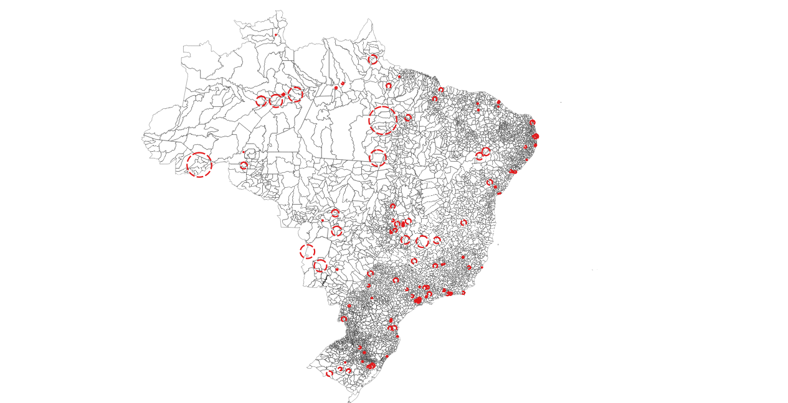

Last updated on format(Sys.time(), '%d %B, %Y') How we obtained the Sample WSS Operators BRAZIL and what it looks like
Sampling design
- The sample for the survey is mutuated from the sampling design of LAPOP because the goal is to survey the WSSS providers in the same areas where LAPOP was interviewing households. LAPOP households interviews covered 1,563 IDs located in 250 clusters, found in 107 municipios.
LAPOP provided a file with geofences that indicate a circle containing each cluster in 2016 (might be slightly changed in 2018)

Based on those, we identified the (expected) clusters for POPA 2018 sample & matched each location with the pertinent WSS Supplier in the area. We arrived to a sample of ??50 different suppliers.
We asked to the suppliers interviewed to confirm the list of municipios they serve, so that to have a precise understanding of the respective area of coverage.
In order to match our sample to official Brazil admin boundaries of municipios (as in Census 2017), I downloaded from IBGE {./01_rawdata/IBGE_regioes} the ID keys and shapefiles (polygons) for: . RG2017_regioesgeograficas2017_20180911.shp = Regiões Geográficas Composição por Municípios - 2017 (5570) . RG2017_rgi_20180911.shp = Limite das Regiões Geográficas Imediatas - 2017 (510) . RG2017_rgint_20180911.shp = Limite das Regiões Geográficas Intermediárias - 2017 (133)

This survey encompasses two main goals
- Survey of WSS suppliers
- Survey of small samples of househods served by the above suppliers (also a chance to validate the LAPOP hh survey in the same areas)
What follow is a preliminary analysis of the 2 respective samples.
(PHASE I) The Water & Sanitation Providers
THE UNIVERSE OF ORGANISMOS OPERADORES IN MEXICO
INEGI has identified a total of 2,688 “Organismos Operadores” (OO) in the “Censo de Captacion, Tratamiento y Suministro de Agua” conducted in 2014 and published in 2016 (??? ). Of all of these, some ~700 could be rightly defined as “Organismos Operadores”, i.e. entities specialized in the provision of the services of water and sanitation (regardless of their degree of autonomy in their decision making and financial management.
> The service providers *"organismo que presta el servicio de captación, tratamiento y suministro de agua"* in Mexico are extremely heterogeneous in nature and conditions. Here are some key information from the Economic Census
- JURIDICAL CATEGORY:
- 2401 (of 2668) are servicios del sector público
- 257 (of 2668) are asociación civil
- 30 (of 2668) are sociedad mercantil con fines de lucro o sociedad cooperativa
In this project, the classification that we use is mostly derived from a Nota Tecnica prepared by some colleagues of the IADB, WSA division (See ???). This managed to retreive some basic information on 2,252 Prestadores.
- GEOGRAPHIC COVERAGE: according to INEGI, the OOs can present different coverage (???)
- Only the cabecera municipal (1245 out of 2668)
- Cabecera Municipal + some other localidades (892 out of 2668)
- Whole Municipio (350 out of 2668)
- Intermunicipal
- Whole Entidad Federativa
- Rural
Otros (201 of 2668)
- EMPLOYED PERSONNEL:
- personal ocupado por sexo; 81.3% con trabajadores hombres y 18.7% mujeres
- obreros y técnicos; 76,744 obreros y técnicos (62.5%)/un total de 117 866 puestos de trabajo
- empleados y directivos;
* personal no remunerado 3,764 trabaja- dores no remunerados/un total de 117 866 puestos de trabajo * promedio de horas trabajadas * personal no dependiente de la razón social * remuneraciones pagadas * prestaciones sociales * pago al personal subcontratado.
- INGRESOS POR CONSUMO DE BIENES Y SERVICIOS:
- Suministro de agua 69.3%
- Derechos de conexión y alcantarillado 2.1%
- Ingresos por ejercicios anteriores 9.2%
- Otros Venta de agua tratada 7.6%
- Tomas de agua por tipo de usuario
- Toma doméstica 92.1%
- Toma comercial 6.3 %
- Toma industrial 0.6 %
- Toma de servicios públicos 1 %
- Distribución porcentual de los ingresos según la venta de agua potable por tipo de usuario
- Toma doméstica 60.9 %
- Toma comercial 25.3 %
- Toma industrial 8.1 %
- Toma de servicios públicos 5.7 %
THE ORGANISMOS OPERADORES IN OUR SAMPLE
- JURIDICAL CATEGORY (“TIPO”) refers to the juridical status of the agency: 654 are considered proper “PRESTADORES”, whereas 1,557 are not considered as proper utilities in the classification, respectively:
- 1,332 are No clasificado
- 245 are cases in which the municipalities that directly provide water and sanitation services
- “RANGO” refers to the size of the populaition served.
Which Entidades and Municipios
The ENTIDADES and MUNICIPIOS INCLUDING LAPOP/POPA clusters (2016 –> closely followed in 2018) –> saved POPA Cluster size by Admin Bound in –> saved SPJOIN RESULTS LAPOP FENCES intersected with Mun (Centroids and fences)
(PHASE II) The households served in the respective service areas of the surveyed Water & Sanitation Providers
Which households?
The sample selected is made of “Viviendas Particulares Habitadas” (Mexico, INEGI definition) and “domicilios particulares permanentes” (as opposed t “improvisado”, Brazl)
How many?
- Para o Brasil foi considerada a amostra de 1500 domicilios com 12 domicilios distribuidos pelos 107 municipios determinados.
Spatial identification of hh clusters
First of all, let’s see where the household clusters are located.
Changes occurred between 2000-2010 in areas of interest
Look at Changes in ENTIDADES and MUNICIPIOS covered by LAPOP/POPA clusters according to census 2010 compared to census 2000
REFERENCE
LS0tCnRpdGxlOiAiVGhlIHNhbXBsZSBvZiBXYXRlciAmIFNhbml0YXRpb24gUHJvdmlkZXJzIgpiaWJsaW9ncmFwaHk6IEJSX1dhdGVyU3VydmV5LmJpYgotLS0KCkxhc3QgdXBkYXRlZCBvbiBgZm9ybWF0KFN5cy50aW1lKCksICclZCAlQiwgJVknKWAKSG93IHdlIG9idGFpbmVkIHRoZSBTYW1wbGUgV1NTIE9wZXJhdG9ycyBCUkFaSUwgYW5kIHdoYXQgaXQgbG9va3MgbGlrZQoKCmBgYHtyIFNFVFVQLCBtZXNzYWdlPUZBTFNFLCB3YXJuaW5nPUZBTFNFLCBpbmNsdWRlPUZBTFNFIH0KIyBCRUxMTyAgIGh0dHBzOi8vaG9sdHp5LmdpdGh1Yi5pby9QaW1wLW15LXJtZC8jcmVmZXJlbmNlcwoKIyBodHRwczovL3N0YWNrb3ZlcmZsb3cuY29tL3F1ZXN0aW9ucy80MzU0OTkzMC9wZGYtZmlndXJlcy1ub3Qtc2hvd24taW4taHRtbC1maWxlcy1wcm9kdWNlZC1ieS1ybWFya2Rvd24td2hlbi1vcGVuLXdpdGgtZmlyZWZveAojIHRvIGZpeCBpc3N1ZSBvZiBwaWN0dXJlIG5vdCByZW5kZXJpbmcgVFJZIAojIGRldnRvb2xzOjppbnN0YWxsX2dpdGh1YigneWlodWkva25pdHInKQoKa25pdHI6Om9wdHNfY2h1bmskc2V0KGZpZy5yZXRpbmEgPSAyLCAjIHdpbGwgZW5zdXJlIGNyaXNwIGRpc3BsYXkgb24gcmV0aW5hIHNjcmVlbnMgYnV0IGJlIGF3YXJlIHRoYXQgaXQgd2lsbCBkb3VibGUgdGhlIHBoeXNpY2FsIHNpemUgb2YgeW91ciBpbWFnZXMuIAogICAgICAgICAgICAgICAgICAgICAgdGlkeS5vcHRzID0gbGlzdCh3aWR0aC5jdXRvZmYgPSAxMjApLCAgIyBGb3IgY29kZQogICAgICAgICAgICAgICAgICAgICAgb3B0aW9ucyh3aWR0aCA9IDEyMCkgIyBGb3Igb3V0cHV0CgkJCQkJCQkgKSAgCgojICBUaGUgZW5jb2RpbmcgKCJJU08tODg1OS0xIikgaXMgbm90IFVURi04LiBXZSB3aWxsIG9ubHkgc3VwcG9ydCBVVEYtOCBpbiB0aGUgZnV0dXJlLiBQbGVhc2UgcmUtc2F2ZSB5b3VyIGZpbGUgInNhbXBsZS5SbWQiIHdpdGggdGhlIFVURi04IGVuY29kaW5nLgoKIyBUbyBnZW5lcmF0ZSB0YWJsZXMgdXNpbmcgc3VtbWFyeXRvb2wgcyBvd24gaHRtbCByZW5kZXJpbmcsIHRoZSAuUm1kIGRvY3VtZW50IHMgY29uZmlndXJhdGlvbiBwYXJ0ICh5YW1sKSBtdXN0IHBvaW50IHRvIHRoZSBwYWNrYWdlIHMgc3VtbWFyeXRvb2xzLmNzcyBmaWxlLgpgYGAKCmBgYHtyIExPQURQQ0ssIG1lc3NhZ2U9RkFMU0UsIHdhcm5pbmc9RkFMU0UsIGluY2x1ZGU9RkFMU0V9CmxpYnJhcnkodGlkeXZlcnNlKQpsaWJyYXJ5KHN0cmluZ3IpCmxpYnJhcnkoZm9yY2F0cykKbGlicmFyeShzY2FsZXMpCmxpYnJhcnkocGF0Y2h3b3JrKQpsaWJyYXJ5KGNvdW50cnljb2RlKQpsaWJyYXJ5KHNmKQpsaWJyYXJ5KGhlcmUpCmxpYnJhcnkoa2FibGVFeHRyYSkKbGlicmFyeShzdW1tYXJ5dG9vbHMpCgpgYGAKCgoKCgoKYGBge3IgQ09QWU9VVFBpbWFnZSwgbWVzc2FnZT1GQUxTRSwgaW5jbHVkZT1GQUxTRX0KIyBPS0tJTywgSSBhbSBpbiAvRGF0YU1FWCwgYmVjYXVzZSBpdCBjb250YWlucyBhIGZpbGUgYC5oZXJlYApsaWJyYXJ5KGhlcmUpCmhlcmU6OmRyX2hlcmUoc2hvd19yZWFzb24gPSBUKQoKZnJvbV9kaXIgPC0gaGVyZTo6aGVyZSgiMDdfb3V0cHV0IikKdG9fZGlyIDwtIGhlcmU6OmhlcmUoIkJyYXppbFdhdGVyU3VydmV5IiwgIm91dHB1dCIpCgpmaWxlcyA8LSBsaXN0LmZpbGVzKHBhdGggPSBmcm9tX2RpciAsIGZ1bGwubmFtZXMgPSBUUlVFKSAjLCAgcGF0dGVybiA9ICIucG5nJCIgKQptb3ZlIDwtIGZpbGVzW3NhcHBseShmaWxlcywgZmlsZS5zaXplKSA8IDEwMDAwMDAwMF0gIyA8IDEwMCBNQiBvciBHaXRodWIgd2lsbCBnZXQgc3R1Y2sKCiMgLS0tIFNZTlRBWAojIGZpbGUuY29weShsaXN0Lm9mLmZpbGVzLCBuZXcuZm9sZGVyKQoKZmlsZS5jb3B5KCBtb3ZlLCB0byA9IHRvX2RpciAsIG92ZXJ3cml0ZSA9IFQgKQojIGlmIEkgaGFkIGxpc3RlZCB3aXRoIGZ1bGwubmFtZXMgPSBGCiMgZmlsZS5jb3B5KCBmaWxlLnBhdGgoZnJvbV9kaXIsIG1vdmUpLCB0byA9IHRvX2RpciAgKQpgYGAKCmBgYHtyIENPUFlPVVRQZGF0YSwgbWVzc2FnZT1GQUxTRSwgaW5jbHVkZT1GQUxTRX0KbGlicmFyeShoZXJlKQpoZXJlOjpkcl9oZXJlKHNob3dfcmVhc29uID0gVCkKCmZyb21fZGlyMiA8LSBoZXJlOjpoZXJlKCIwM19jbGVhbmRhdGEiKQp0b19kaXIyIDwtIGhlcmU6OmhlcmUoIkJyYXppbFdhdGVyU3VydmV5IiwgImRhdGEiKQoKZmlsZXMyIDwtIGxpc3QuZmlsZXMocGF0aCA9IGZyb21fZGlyMiAsIGZ1bGwubmFtZXMgPSBUUlVFLCBwYXR0ZXJuID0gICIuKlxcLlJkYXRhJCIpICAjIHBhdHRlcm4gPSAgIiheb3BlcnxecHJlc3xeQ2Vuc3VzKS4qXFwuUmRhdGEkIikgCm1vdmUyIDwtIGZpbGVzMltzYXBwbHkoZmlsZXMyLCBmaWxlLnNpemUpIDwgMTAwMDAwMDAwXSAjIDwgMTAwIE1CIG9yIEdpdGh1YiB3aWxsIGdldCBzdHVjawoKIyAtLS0gU1lOVEFYCiMgZmlsZS5jb3B5KGxpc3Qub2YuZmlsZXMsIG5ldy5mb2xkZXIpCmZpbGUuY29weSggbW92ZTIsIHRvID0gdG9fZGlyMiAsIG92ZXJ3cml0ZSA9IFQgKQpgYGAKCgoKIyMgU2FtcGxpbmcgZGVzaWduCgoxLiBUaGUgc2FtcGxlIGZvciB0aGUgc3VydmV5IGlzIG11dHVhdGVkIGZyb20gdGhlIHNhbXBsaW5nIGRlc2lnbiBvZiBMQVBPUCAgYmVjYXVzZSB0aGUgZ29hbCBpcyB0byBzdXJ2ZXkgdGhlIFdTU1MgcHJvdmlkZXJzIGluIHRoZSBfc2FtZV8gYXJlYXMgd2hlcmUgTEFQT1Agd2FzIGludGVydmlld2luZyBob3VzZWhvbGRzLiBMQVBPUCBob3VzZWhvbGRzIGludGVydmlld3MgY292ZXJlZCAqKjEsNTYzIElEcyoqIGxvY2F0ZWQgaW4gKioyNTAgY2x1c3RlcnMqKiwgZm91bmQgaW4gKioxMDcgbXVuaWNpcGlvcyoqLlteMV0gCgpbXjFdOiBUaGlzIGluZm9ybWF0aW9uIHdhcyByZXRyaWV2ZWQgZnJvbSB0aGUgU1RBVEEgZmlsZXMgd2l0aCB0aGUgc2FtcGxlIG9mIEJSQSAyMDE2LiAKCkxBUE9QIHByb3ZpZGVkIGEgZmlsZSB3aXRoIGdlb2ZlbmNlcyB0aGF0IGluZGljYXRlIGEgY2lyY2xlIGNvbnRhaW5pbmcgZWFjaCBjbHVzdGVyIGluIDIwMTYgKG1pZ2h0IGJlIHNsaWdodGx5IGNoYW5nZWQgaW4gMjAxOCkgCgo8Y2VudGVyPgohW0xBUE9QIGNsdXN0ZXJzIG9mIGhoIGludGVydmlld2VkIGluIDIwMTZdKC4vb3V0cHV0L1FnaXNfTGFwb3AucG5nKSAKPC9jZW50ZXI+CgoKMi4gQmFzZWQgb24gdGhvc2UsIHdlIGlkZW50aWZpZWQgdGhlIChleHBlY3RlZCkgY2x1c3RlcnMgZm9yIFBPUEEgMjAxOCBzYW1wbGUgJiBtYXRjaGVkIGVhY2ggbG9jYXRpb24gd2l0aCB0aGUgcGVydGluZW50IFdTUyBTdXBwbGllciBpbiB0aGUgYXJlYS4gCldlIGFycml2ZWQgdG8gYSBzYW1wbGUgb2YgKio/PzUwIGRpZmZlcmVudCBzdXBwbGllcnMqKi4gIAoKMy4gV2UgYXNrZWQgdG8gdGhlIHN1cHBsaWVycyBpbnRlcnZpZXdlZCB0byBjb25maXJtIHRoZSBsaXN0IG9mIG11bmljaXBpb3MgdGhleSBzZXJ2ZSwgc28gdGhhdCB0byBoYXZlIGEgcHJlY2lzZSB1bmRlcnN0YW5kaW5nIG9mIHRoZSByZXNwZWN0aXZlIGFyZWEgb2YgY292ZXJhZ2UuIAoKPiBJbiBvcmRlciB0byBtYXRjaCBvdXIgc2FtcGxlIHRvIG9mZmljaWFsIEJyYXppbCBhZG1pbiBib3VuZGFyaWVzIG9mIG11bmljaXBpb3MgKGFzIGluIENlbnN1cyAyMDE3KSwgSSBkb3dubG9hZGVkIGZyb20gSUJHRSBfey4vMDFfcmF3ZGF0YS9JQkdFX3JlZ2lvZXN9XyB0aGUgSUQga2V5cyBhbmQgc2hhcGVmaWxlcyAocG9seWdvbnMpIGZvcjogCiAgICAuIFJHMjAxN19yZWdpb2VzZ2VvZ3JhZmljYXMyMDE3XzIwMTgwOTExLnNocCA9IFJlZ2nDtWVzIEdlb2dyw6FmaWNhcyBDb21wb3Npw6fDo28gcG9yICoqTXVuaWPDrXBpb3MqKiAtIDIwMTcgKDU1NzApCiAgICAuIFJHMjAxN19yZ2lfMjAxODA5MTEuc2hwID0gTGltaXRlIGRhcyAqKlJlZ2nDtWVzIEdlb2dyw6FmaWNhcyBJbWVkaWF0YXMqKiAtIDIwMTcgKDUxMCkKICAgIC4gUkcyMDE3X3JnaW50XzIwMTgwOTExLnNocCA9IExpbWl0ZSBkYXMgKipSZWdpw7VlcyBHZW9ncsOhZmljYXMgSW50ZXJtZWRpw6FyaWFzKiogLSAyMDE3ICgxMzMpCiAKPGNlbnRlcj4KIVtCcmF6aWwgbXVuaWNpcGlvcyBjb3ZlcmVkIGJ5IHRoZSBXU1MgcHJvdmlkZXJzIGluIFBPUEEgc2FtcGxlXSguL291dHB1dC8wMV90bWFwX1BvcGFTYW1wbGVNLnBuZykgCjwvY2VudGVyPgoKNC4gVGhpcyBzdXJ2ZXkgZW5jb21wYXNzZXMgdHdvIG1haW4gZ29hbHMKCgkrIEkpIFN1cnZleSBvZiBXU1Mgc3VwcGxpZXJzIAoJKyBJSSkgU3VydmV5IG9mIHNtYWxsIHNhbXBsZXMgb2YgaG91c2Vob2RzIHNlcnZlZCBieSB0aGUgYWJvdmUgc3VwcGxpZXJzIChhbHNvIGEgY2hhbmNlIHRvIHZhbGlkYXRlIHRoZSBMQVBPUCBoaCBzdXJ2ZXkgaW4gdGhlIHNhbWUgYXJlYXMpCgkKV2hhdCBmb2xsb3cgaXMgYSBwcmVsaW1pbmFyeSBhbmFseXNpcyBvZiB0aGUgMiByZXNwZWN0aXZlIHNhbXBsZXMuIAoKCiMjIChQSEFTRSBJKSBUaGUgV2F0ZXIgJiBTYW5pdGF0aW9uIFByb3ZpZGVycyAKCiMjIyMgVEhFIFVOSVZFUlNFIE9GIE9SR0FOSVNNT1MgT1BFUkFET1JFUyBJTiBNRVhJQ08gCgpJTkVHSSBoYXMgaWRlbnRpZmllZCBhIHRvdGFsIG9mIF8yLDY4OCAgIk9yZ2FuaXNtb3MgT3BlcmFkb3JlcyJfIChPTykgaW4gdGhlIF8iQ2Vuc28gZGUgQ2FwdGFjaW9uLCBUcmF0YW1pZW50byB5IFN1bWluaXN0cm8gZGUgQWd1YSJfIApjb25kdWN0ZWQgaW4gMjAxNCBhbmQgcHVibGlzaGVkIGluIDIwMTYgWyBAaW5lZ2lfcGFub3JhbWFfMjAxNiBdLiAgT2YgYWxsIG9mIHRoZXNlLCBzb21lIH43MDAgY291bGQgYmUgcmlnaHRseSBkZWZpbmVkIGFzIF8iT3JnYW5pc21vcyBPcGVyYWRvcmVzIl8sIGkuZS4gZW50aXRpZXMgc3BlY2lhbGl6ZWQgaW4gdGhlIHByb3Zpc2lvbiBvZiB0aGUgc2VydmljZXMgb2Ygd2F0ZXIgYW5kIHNhbml0YXRpb24gKHJlZ2FyZGxlc3Mgb2YgdGhlaXIgZGVncmVlIG9mIGF1dG9ub215IGluIHRoZWlyIGRlY2lzaW9uIG1ha2luZyBhbmQgZmluYW5jaWFsIG1hbmFnZW1lbnQuIAoKCT4gIFRoZSBzZXJ2aWNlIHByb3ZpZGVycyAqIm9yZ2FuaXNtbyBxdWUgcHJlc3RhIGVsIHNlcnZpY2lvIGRlIGNhcHRhY2nDg8KzbiwgdHJhdGFtaWVudG8geSBzdW1pbmlzdHJvIGRlIGFndWEiKiBpbiBNZXhpY28gYXJlIGV4dHJlbWVseSBoZXRlcm9nZW5lb3VzIGluIG5hdHVyZSBhbmQgY29uZGl0aW9ucy4gSGVyZSBhcmUgc29tZSBrZXkgaW5mb3JtYXRpb24gZnJvbSB0aGUgRWNvbm9taWMgQ2Vuc3VzCgorIEpVUklESUNBTCBDQVRFR09SWToKCSogMjQwMSAob2YgMjY2OCkgYXJlIF9zZXJ2aWNpb3MgZGVsIHNlY3RvciBww4PCumJsaWNvXwoJKiAyNTcgKG9mIDI2NjgpIGFyZSBfYXNvY2lhY2nDg8KzbiBjaXZpbF8KCSogMzAgKG9mIDI2NjgpIGFyZSBfc29jaWVkYWQgbWVyY2FudGlsIGNvbiBmaW5lcyBkZSBsdWNybyBvIHNvY2llZGFkIGNvb3BlcmF0aXZhXwoKSW4gdGhpcyBwcm9qZWN0LCB0aGUgY2xhc3NpZmljYXRpb24gdGhhdCB3ZSB1c2UgaXMgbW9zdGx5IGRlcml2ZWQgZnJvbSBhIF9Ob3RhIFRlY25pY2FfIHByZXBhcmVkIGJ5IHNvbWUgY29sbGVhZ3VlcyBvZiB0aGUgSUFEQiwgV1NBIGRpdmlzaW9uIFtTZWUgQHJpcXVlbG1lX2xvcl8yMDE4LCBwcC4gMS0zXS4gVGhpcyBtYW5hZ2VkIHRvIHJldHJlaXZlIHNvbWUgYmFzaWMgaW5mb3JtYXRpb24gb24gKioyLDI1MiBQcmVzdGFkb3JlcyoqLiAKCisgR0VPR1JBUEhJQyBDT1ZFUkFHRTogYWNjb3JkaW5nIHRvIElORUdJLCB0aGUgT09zIGNhbiBwcmVzZW50IGRpZmZlcmVudCBjb3ZlcmFnZSAgW0BpbmVnaV9wYW5vcmFtYV8yMDE2LCBwLiAxNl0KCSogT25seSB0aGUgY2FiZWNlcmEgbXVuaWNpcGFsICgxMjQ1IG91dCBvZiAgMjY2OCkKCSogQ2FiZWNlcmEgTXVuaWNpcGFsICsgc29tZSBvdGhlciBsb2NhbGlkYWRlcyAoODkyIG91dCBvZiAgMjY2OCkKCSogV2hvbGUgTXVuaWNpcGlvICgzNTAgb3V0IG9mICAyNjY4KQoJKiBJbnRlcm11bmljaXBhbCAKCSogV2hvbGUgRW50aWRhZCBGZWRlcmF0aXZhCgkqIFJ1cmFsIAoqIE90cm9zICgyMDEgb2YgMjY2OCkKCisgRU1QTE9ZRUQgUEVSU09OTkVMOgoJKiBwZXJzb25hbCBvY3VwYWRvIHBvciBzZXhvOyA4MS4zJSBjb24gdHJhYmFqYWRvcmVzIGhvbWJyZXMgeSAxOC43JSBtdWplcmVzCgkqIG9icmVyb3MgeSB0w4PCqWNuaWNvczsgNzYsNzQ0IG9icmVyb3MgeSB0w4PCqWNuaWNvcyAoNjIuNSUpL3VuIHRvdGFsIGRlIDExNyA4NjYgcHVlc3RvcyBkZSB0cmFiYWpvCgkqIGVtcGxlYWRvcyB5IGRpcmVjdGl2b3M7IAoJfn4qIHBlcnNvbmFsIG5vIHJlbXVuZXJhZG9+fiAzLDc2NCB0cmFiYWphLSBkb3JlcyBubyByZW11bmVyYWRvcy91biB0b3RhbCBkZSAxMTcgODY2IHB1ZXN0b3MgZGUgdHJhYmFqbwoJfn4qIHByb21lZGlvIGRlIGhvcmFzIHRyYWJhamFkYXN+fiAKCX5+KiBwZXJzb25hbCBubyBkZXBlbmRpZW50ZSBkZSBsYSByYXrDg8KzbiBzb2NpYWx+fiAKCX5+KiByZW11bmVyYWNpb25lcyBwYWdhZGFzfn4gCgl+fiogcHJlc3RhY2lvbmVzIHNvY2lhbGVzfn4gCgl+fiogcGFnbyBhbCBwZXJzb25hbCBzdWJjb250cmF0YWRvLn5+CgorIElOR1JFU09TIFBPUiBDT05TVU1PIERFIEJJRU5FUyBZIFNFUlZJQ0lPUzoKCSogU3VtaW5pc3RybyBkZSBhZ3VhIDY5LjMlCgkqIERlcmVjaG9zIGRlIGNvbmV4acODwrNuIHkgYWxjYW50YXJpbGxhZG8gMi4xJQoJKiBJbmdyZXNvcyBwb3IgZWplcmNpY2lvcyBhbnRlcmlvcmVzIDkuMiUKCSogT3Ryb3MgVmVudGEgZGUgYWd1YSB0cmF0YWRhIDcuNiUKCisgVG9tYXMgZGUgYWd1YSBwb3IgdGlwbyBkZSB1c3VhcmlvCiAJKiBUb21hIGRvbcODwqlzdGljYSA5Mi4xJQoJKiBUb21hIGNvbWVyY2lhbCA2LjMgJSAKCSogVG9tYSBpbmR1c3RyaWFsIDAuNiAlCgkqIFRvbWEgZGUgc2VydmljaW9zIHDDg8K6YmxpY29zIDEgJSAKCQorIERpc3RyaWJ1Y2nDg8KzbiBwb3JjZW50dWFsIGRlIGxvcyBpbmdyZXNvcyBzZWfDg8K6biBsYSB2ZW50YSBkZSBhZ3VhIHBvdGFibGUgcG9yIHRpcG8gZGUgdXN1YXJpbwoJKiBUb21hIGRvbcODwqlzdGljYSA2MC45ICUKCSogVG9tYSBjb21lcmNpYWwgMjUuMyAlCgkqIFRvbWEgaW5kdXN0cmlhbCA4LjEgJQoJKiBUb21hIGRlIHNlcnZpY2lvcyBww4PCumJsaWNvcyA1LjcgJQoJCiMjIyMgVEhFIE9SR0FOSVNNT1MgT1BFUkFET1JFUyBJTiBPVVIgU0FNUExFIAorICsgSlVSSURJQ0FMIENBVEVHT1JZICgiVElQTyIpIHJlZmVycyB0byB0aGUganVyaWRpY2FsIHN0YXR1cyBvZiB0aGUgYWdlbmN5OiAqKjY1NCoqIGFyZSBjb25zaWRlcmVkIHByb3BlciAiUFJFU1RBRE9SRVMiLCB3aGVyZWFzIDEsNTU3IGFyZSBub3QgY29uc2lkZXJlZCBhcyBwcm9wZXIgdXRpbGl0aWVzIGluIHRoZSBjbGFzc2lmaWNhdGlvbiwgcmVzcGVjdGl2ZWx5OiAgCgkqIDEsMzMyIGFyZSAqTm8gY2xhc2lmaWNhZG8qCgkqIDI0NSBhcmUgY2FzZXMgaW4gd2hpY2ggdGhlIG11bmljaXBhbGl0aWVzIHRoYXQgZGlyZWN0bHkgcHJvdmlkZSB3YXRlciBhbmQgc2FuaXRhdGlvbiBzZXJ2aWNlcwoKCgkKYGBge3IgT3BlclRJUE8sIGVjaG89RkFMU0UsIG1lc3NhZ2U9RkFMU0UsIHJlc3VsdHMgPSAnYXNpcyd9CgojICMgbG9hZCggaGVyZSggImRhdGEiLCAicHJlc3RhZG9yZXNfUG9wYV9VVEYuUmRhdGEiKSkKIyAKIyAjIGh0dHBzOi8vY3Jhbi5yLXByb2plY3Qub3JnL3dlYi9wYWNrYWdlcy9zdW1tYXJ5dG9vbHMvdmlnbmV0dGVzL0ludHJvZHVjdGlvbi5odG1sCiMgbGlicmFyeShzdW1tYXJ5dG9vbHMpCiMgRnJlcV9UaXBvIDwtIHN1bW1hcnl0b29sczo6ZnJlcShwcmVzdGFkb3Jlc19Qb3BhX1VURiRUaXBvX2xibCAsIAojIAkJCSAgcmVwb3J0Lm5hcyA9IEZBTFNFLCAKIyAJCQlyb3VuZC5kaWdpdHMgPSAyLCAjIGRlZmF1bHQgMgojIAkJCW9yZGVyID0gImZyZXEiLCAjICAKIyAJCQlzdHlsZSA9ICdybWFya2Rvd24nLCAjICAKIyAJCQkgb21pdC5oZWFkaW5ncyA9IFQKIyAJCQkpIAojIAojICMgPT09PT09PSBET0VTIE5PVCBSRU5ERVIgSU4gU0lURSAKIyAjICMgVGhlbiB1c2UgdmlldygpLCBsaWtlIHNvOgojICN2aWV3KEZyZXFfVGlwbywgbWV0aG9kID0gInBhbmRlciIsIHN0eWxlID0gInJtYXJrZG93biIsIG9taXQuaGVhZGluZ3MgPSBUUlVFCSkKIyAjIAojICMgcHJpbnQoRnJlcV9UaXBvLCBzdHlsZSA9ICJybWFya2Rvd24iLCByZXBvcnQubmFzID0gRkFMU0UsIAojICAjICAgICAgICAgICAgICAgIHRvdGFscyA9IEZBTFNFLCBvbWl0LmhlYWRpbmdzID0gVFJVRSkKIyAjICMgIyBwcmludChGcmVxVGlwbykKIyAjICMgCiMgIyBrYWJsZShGcmVxX1RpcG8pICU+JQojICMgICBrYWJsZV9zdHlsaW5nKCJzdHJpcGVkIiwgZnVsbF93aWR0aCA9IEYsIGxhdGV4X29wdGlvbnMgPSAic2NhbGVfZG93biIpICAgCiMgCiMgIyA9PT09PT09IFdPUktTIChsb2NhbGx5IG5vdCBpbiBzaXRlKSBCVVQgV0lIVCBFWFRSQSBDT0xVTU5TIEkgRE9OVCBXQU5UIAojICBrbml0cjo6a2FibGUoRnJlcV9UaXBvLAojIAkJCQkgZm9ybWF0ID0gImh0bWwiLAojIAkJCQkgZGlnaXRzID0gMiwKIyAJCQkJIGNhcHRpb24gPSAiQWdlbmNpZXMgUHJvdmlkaW5nIFdhdGVyICYgU2FuaXRhdGlvbiBieSBUeXBlIChJbmNsdWRpbmcgd2hlbiBOb3QgcHJvcGVybHkgZGVmaW5lZCIpICU+JQojIAlrYWJsZV9zdHlsaW5nKCJzdHJpcGVkIiwgZnVsbF93aWR0aCA9IEYpICU+JQojIAlyb3dfc3BlYygxLCBib2xkID0gVCwgY29sb3IgPSAid2hpdGUiLCBiYWNrZ3JvdW5kID0gIiNENzI2MUUiKSAlPiUKIyAJcm93X3NwZWMoNSwgYm9sZCA9IFQsICAgYmFja2dyb3VuZCA9ICIjRkZDMUMxIiklPiUKIyAJcm93X3NwZWMoOSwgYm9sZCA9IFQsICBiYWNrZ3JvdW5kID0gIiNGRkMxQzEiKQpgYGAKCisgIlJBTkdPIiByZWZlcnMgdG8gdGhlIHNpemUgb2YgdGhlIHBvcHVsYWl0aW9uIHNlcnZlZC4gIAoKCgpgYGB7ciBPcGVyUkFOR08sIGVjaG89RkFMU0UsIG1lc3NhZ2U9RkFMU0UsIHJlc3VsdHMgPSAnYXNpcyd9CgojIGxvYWQoIGhlcmUoICJkYXRhIiwgInByZXN0YWRvcmVzX1BvcGFfVVRGLlJkYXRhIikpCiMgCiMgIyBodHRwczovL2NyYW4uci1wcm9qZWN0Lm9yZy93ZWIvcGFja2FnZXMvc3VtbWFyeXRvb2xzL3ZpZ25ldHRlcy9JbnRyb2R1Y3Rpb24uaHRtbAojIGxpYnJhcnkoc3VtbWFyeXRvb2xzKQojIEZyZXFfUmFuZ28gPC0gc3VtbWFyeXRvb2xzOjpmcmVxKHByZXN0YWRvcmVzX1BvcGFfVVRGJFJhbmdvX2xibCAsIAojIAkJCSByZXBvcnQubmFzID0gRkFMU0UsIAojIAkJCXJvdW5kLmRpZ2l0cyA9IDIsICMgZGVmYXVsdCAyCiMgCQkJb3JkZXIgPSAiZnJlcSIsICMgIAojIAkJCSBzdHlsZSA9ICdybWFya2Rvd24nLCAjICAKIyAJCQkgb21pdC5oZWFkaW5ncyA9IFQKIyAJCQkpIAojIAojICMgPT09PT09PSBET0VTIE5PVCBSRU5ERVIgSU4gU0lURSAKIyAjICMgVGhlbiB1c2UgdmlldygpLCBsaWtlIHNvOgojICMgdmlldyhGcmVxX1RpcG8sIG1ldGhvZCA9ICJwYW5kZXIiLCBzdHlsZSA9ICJybWFya2Rvd24iLCBvbWl0LmhlYWRpbmdzID0gVFJVRSkKIyAjIAojICMgcHJpbnQoRnJlcV9UaXBvLCBzdHlsZSA9ICJybWFya2Rvd24iLCByZXBvcnQubmFzID0gRkFMU0UsIAojICMgICAgICAgICAgICAgICAgICB0b3RhbHMgPSBGQUxTRSwgb21pdC5oZWFkaW5ncyA9IFRSVUUpCiMgIyAjIHByaW50KEZyZXFUaXBvKQojICMgCiMgIyBrYWJsZShGcmVxVGlwbykgJT4lCiMgIyAgIGthYmxlX3N0eWxpbmcoInN0cmlwZWQiLCBmdWxsX3dpZHRoID0gRiwgbGF0ZXhfb3B0aW9ucyA9ICJzY2FsZV9kb3duIikgIyAlPiUKIyAjICAgIyAgIHJvd19zcGVjKDExLCBib2xkID0gVCwgY29sb3IgPSAid2hpdGUiLCBiYWNrZ3JvdW5kID0gIiNENzI2MUUiKQojIAojICMgPT09PT09PSBXT1JLUyBCVVQgV0lIVCBFWFRSQSBDT0xVTU5TIEkgRE9OVCBXQU5UCiMga25pdHI6OmthYmxlKEZyZXFfUmFuZ28sCiMgCQkJCSBmb3JtYXQgPSAicGFuZG9jIiwKIyAJCQkJIGRpZ2l0cyA9IDIsCiMgCQkJCSBjYXB0aW9uID0gIkFnZW5jaWVzIFByb3ZpZGluZyBXYXRlciAmIFNhbml0YXRpb24gYnkgc2l6ZSBvZiBwb3B1bGF0aW9uIHNlcnZlZCAoSW5jbHVkaW5nIHdoZW4gTm90IHByb3Blcmx5IGRlZmluZWQiKQojIAojICMgc3Rfb3B0aW9ucygpCmBgYAoKCiMjIFdoaWNoIEVudGlkYWRlcyBhbmQgTXVuaWNpcGlvcwoKVGhlIEVOVElEQURFUyBhbmQgTVVOSUNJUElPUyBJTkNMVURJTkcgTEFQT1AvUE9QQSBjbHVzdGVycyAoMjAxNiAtLT4gY2xvc2VseSBmb2xsb3dlZCBpbiAyMDE4KQoJLS0+IHNhdmVkIFBPUEEgQ2x1c3RlciBzaXplIGJ5IEFkbWluIEJvdW5kIGluIAoJLS0+IHNhdmVkIFNQSk9JTiBSRVNVTFRTIExBUE9QIEZFTkNFUyBpbnRlcnNlY3RlZCB3aXRoIE11biAoQ2VudHJvaWRzIGFuZCBmZW5jZXMpIAoJIAoKYGBge3IsICBlY2hvPUZBTFNFLCBmaWcuY2FwPSJUaGUgRU5USURBREVTIHdoaWNoIGluY2x1ZGUgTEFQT1AgY2x1c3RlcnMgYnkgIyBvZiBoaCBpbnRlcnZpZXdlZCBpbiAyMDE2Iiwgb3V0LndpZHRoID0gJzEwMCUnLCByZXN1bHRzPSdhc2lzJ30KCiMga25pdHI6OmluY2x1ZGVfZ3JhcGhpY3MocGFzdGUwKHRvX2RpciwiLzAxX3RtYXBfUG9wYVNhbXBsZUUucG5nIikpICAgIyBOT1QgUkVOREVSSU5HIAoKIyMjICNsaXN0LmZpbGVzKHBhdGggPSB0b19kaXIpCmBgYAkKCQoKCiMjIChQSEFTRSBJSSkgVGhlIGhvdXNlaG9sZHMgc2VydmVkIGluIHRoZSByZXNwZWN0aXZlIHNlcnZpY2UgYXJlYXMgb2YgdGhlIHN1cnZleWVkIFdhdGVyICYgU2FuaXRhdGlvbiBQcm92aWRlcnMgCgojIyMgV2hpY2ggaG91c2Vob2xkcz8gCgpUaGUgc2FtcGxlIHNlbGVjdGVkIGlzIG1hZGUgb2YgKiJWaXZpZW5kYXMgUGFydGljdWxhcmVzIEhhYml0YWRhcyIqIChNZXhpY28sIElORUdJIGRlZmluaXRpb24pIGFuZCAKKiJkb21pY2lsaW9zIHBhcnRpY3VsYXJlcyBwZXJtYW5lbnRlcyIqIChhcyBvcHBvc2VkIHQgImltcHJvdmlzYWRvIiwgQnJhemwpCgojIyMgSG93IG1hbnk/IAoKMSkgUGFyYSBvIEJyYXNpbCBmb2kgY29uc2lkZXJhZGEgYSBhbW9zdHJhIGRlICoxNTAwIGRvbWljaWxpb3MqIGNvbSAxMiBkb21pY2lsaW9zIGRpc3RyaWJ1aWRvcyBwZWxvcyAqMTA3IG11bmljaXBpb3MqIGRldGVybWluYWRvcy4KCgoKIyMjIFNwYXRpYWwgaWRlbnRpZmljYXRpb24gb2YgaGggY2x1c3RlcnMKCkZpcnN0IG9mIGFsbCwgbGV0J3Mgc2VlIHdoZXJlIHRoZSBob3VzZWhvbGQgY2x1c3RlcnMgYXJlIGxvY2F0ZWQuIAoKPCEtLSA8Y2VudGVyPiAtLT4KPCEtLSAhW1RoZSBFTlRJREFERVMgd2hpY2ggaW5jbHVkZSBMQVBPUCBjbHVzdGVycyBieSAjIG9mIGhoIGludGVydmlld2VkIGluIDIwMTZdKC4vb3V0cHV0LzAxX3RtYXBfUG9wYVNhbXBsZUUucG5nKSAgLS0+CjwhLS0gPC9jZW50ZXI+IC0tPgoKCgpgYGB7ciwgIGVjaG89RkFMU0UsIGZpZy5jYXA9IlRoZSBNVU5JQ0lQSU9TIHdoaWNoIGluY2x1ZGUgTEFQT1AgY2x1c3RlcnMgYnkgIyBvZiBoaCBpbnRlcnZpZXdlZCBpbiAyMDE2Iiwgb3V0LndpZHRoID0gJzEwMCUnLCByZXN1bHRzPSdhc2lzJ30KIyBrbml0cjo6aW5jbHVkZV9ncmFwaGljcyhwYXN0ZTAodG9fZGlyLCIvMDFfdG1hcF9Qb3BhU2FtcGxlTS5wbmciKSkgIyBOT1QgUkVOREVSSU5HIAoKIyMjICNsaXN0LmZpbGVzKHBhdGggPSB0b19kaXIpCmBgYAkKCjwhLS0gPGNlbnRlcj4gLS0+CjwhLS0gIVtUaGUgTVVOSUNJUElPUyB3aGljaCBpbmNsdWRlIExBUE9QIGNsdXN0ZXJzIGJ5ICMgb2YgaGggaW50ZXJ2aWV3ZWQgaW4gMjAxNl0oLi9vdXRwdXQvMDFfdG1hcF9Qb3BhU2FtcGxlTS5wbmcpICAtLT4KPCEtLSA8L2NlbnRlcj4gLS0+CgoKCgojIyMgQ2hhbmdlcyBvY2N1cnJlZCBiZXR3ZWVuIDIwMDAtMjAxMCBpbiBhcmVhcyBvZiBpbnRlcmVzdAoKTG9vayBhdCBDaGFuZ2VzIGluIEVOVElEQURFUyBhbmQgTVVOSUNJUElPUyBjb3ZlcmVkIGJ5IExBUE9QL1BPUEEgY2x1c3RlcnMgYWNjb3JkaW5nIHRvIGNlbnN1cyAyMDEwIGNvbXBhcmVkIHRvIGNlbnN1cyAyMDAwCgoKYGBge3IgQ2Vuc3VzVmFyLCBlY2hvPUZBTFNFfQojICAgCiMgIyBodHRwczovL3JwdWJzLmNvbS9YYXZpL3ViaXNzMTZkMwojICMgaHR0cHM6Ly93YWxrZXJrZS5naXRodWIuaW8vMjAxNi8xMi9ybWQtZHJvcGRvd25zLwojIGxvYWQoIGhlcmUoICJkYXRhIiwgIkNlbnN1c18yeXJzX3BfbGFnX3BjZy5SZGF0YSIpKQojIAojIENlbnN1c1ZhcnMgPC0gY29sbmFtZXMoQ2Vuc3VzXzJ5cnNfcF9sYWdfcGNnWzk6NTVdKQojIFVuaXRPZkFuIDwtIGMoICJUb3RhbCBwZXIgbXVuaWNpcGlvIiwiVG90YWwgcGVyIG11bmljaXBpbyIsIlRvdGFsIHBlciBtdW5pY2lwaW8iLAojIAkJCQkJICAiVG90YWwgcGVyIG11bmljaXBpbyIsIlRvdGFsIHBlciBtdW5pY2lwaW8iLCAiTGFnIFRvdGFsIHBlciBtdW5pY2lwaW8iLAojIAkJCQkJIlBlcmNlbnRhZ2UgQ2hhbmdlIDIwMTAgb3ZlciAyMDAwIiwgCiMgCQkJCQkgICJUb3RhbCBwZXIgbXVuaWNpcGlvIiwgIlBlcmNlbnQgcGVyIG11bmljaXBpbyAyMDAwIiwiUGVyY2VudGFnZSBDaGFuZ2UgMjAxMCBvdmVyIDIwMDAiLCAKIyAJCQkJCSAgIlRvdGFsIHBlciBtdW5pY2lwaW8iLCAiUGVyY2VudCBwZXIgbXVuaWNpcGlvIDIwMDAiLCJQZXJjZW50YWdlIENoYW5nZSAyMDEwIG92ZXIgMjAwMCIsIAojIAkJCQkJICAiUGVyY2VudCBwZXIgbXVuaWNpcGlvIDIwMTAiLCAiUGVyY2VudCBwZXIgbXVuaWNpcGlvIDIwMDAiLCJQZXJjZW50YWdlIFBvaW50cyBDaGFuZ2UgKCUyMDEwIC0gJTIwMDApIiwgCiMgCQkJCQkgICJQZXJjZW50IHBlciBtdW5pY2lwaW8gMjAxMCIsICJQZXJjZW50IHBlciBtdW5pY2lwaW8gMjAwMCIsIlBlcmNlbnRhZ2UgUG9pbnRzIENoYW5nZSAoJTIwMTAgLSAlMjAwMCkiLCAKIyAJCQkJCSAgIlBlcmNlbnQgcGVyIG11bmljaXBpbyAyMDEwIiwgIlBlcmNlbnQgcGVyIG11bmljaXBpbyAyMDAwIiwiUGVyY2VudGFnZSBQb2ludHMgQ2hhbmdlICglMjAxMCAtICUyMDAwKSIsIAojIAkJCQkJICAiUGVyY2VudCBwZXIgbXVuaWNpcGlvIDIwMTAiLCAiUGVyY2VudCBwZXIgbXVuaWNpcGlvIDIwMDAiLCJQZXJjZW50YWdlIFBvaW50cyBDaGFuZ2UgKCUyMDEwIC0gJTIwMDApIiwgCiMgCQkJCQkgICJQZXJjZW50IHBlciBtdW5pY2lwaW8gMjAxMCIsICJQZXJjZW50IHBlciBtdW5pY2lwaW8gMjAwMCIsIlBlcmNlbnRhZ2UgUG9pbnRzIENoYW5nZSAoJTIwMTAgLSAlMjAwMCkiLCAKIyAJCQkJCSAgIlBlcmNlbnQgcGVyIG11bmljaXBpbyAyMDEwIiwgIlBlcmNlbnQgcGVyIG11bmljaXBpbyAyMDAwIiwiUGVyY2VudGFnZSBQb2ludHMgQ2hhbmdlICglMjAxMCAtICUyMDAwKSIsIAojIAkJCQkJICAiUGVyY2VudCBwZXIgbXVuaWNpcGlvIDIwMTAiLCAiUGVyY2VudCBwZXIgbXVuaWNpcGlvIDIwMDAiLCJQZXJjZW50YWdlIFBvaW50cyBDaGFuZ2UgKCUyMDEwIC0gJTIwMDApIiwgCiMgCQkJCQkgICJQZXJjZW50IHBlciBtdW5pY2lwaW8gMjAxMCIsICJQZXJjZW50IHBlciBtdW5pY2lwaW8gMjAwMCIsIlBlcmNlbnRhZ2UgUG9pbnRzIENoYW5nZSAoJTIwMTAgLSAlMjAwMCkiLAojIAkJCQkJICAiUGVyY2VudCBwZXIgbXVuaWNpcGlvIDIwMTAiLCAiUGVyY2VudCBwZXIgbXVuaWNpcGlvIDIwMDAiLCJQZXJjZW50YWdlIFBvaW50cyBDaGFuZ2UgKCUyMDEwIC0gJTIwMDApIiwKIyAJCQkJCSAJCQkJCSAgIlBlcmNlbnQgcGVyIG11bmljaXBpbyAyMDEwIiwgIlBlcmNlbnQgcGVyIG11bmljaXBpbyAyMDAwIiwiUGVyY2VudGFnZSBQb2ludHMgQ2hhbmdlICglMjAxMCAtICUyMDAwKSIsCQkJCQkgICJQZXJjZW50IHBlciBtdW5pY2lwaW8gMjAxMCIsICJQZXJjZW50IHBlciBtdW5pY2lwaW8gMjAwMCIsIlBlcmNlbnRhZ2UgUG9pbnRzIENoYW5nZSAoJTIwMTAgLSAlMjAwMCkiICkKIyAKIyBDZW5zdXNMZWdlbmQgPC0gY2JpbmQoQ2Vuc3VzVmFycywgVW5pdE9mQW4pCiMgY29sbmFtZXMoQ2Vuc3VzTGVnZW5kKSA8LSBjKCJWYXJpYWJsZSBDb2RlIiwgIlZhcmlhYmxlIFR5cGUiKQojIGtuaXRyOjprYWJsZShDZW5zdXNMZWdlbmQsIGNhcHRpb24gPSAiVmFyaWFibGVzIC0gYWdncmVhZ2F0ZWQgYXQgXCJtdW5pY2lwaW9cIiBsZXZlbCAtIHJldHJpZXZlZCBmcm9tIENlbnN1cyAyMDAwIDIwMTAiKQoKYGBgCgoKCgoKCgoKIyMgUkVGRVJFTkNFCgoKCmBgYHtyIGtuaXRBdHRlbXB0LCBlY2hvID0gRiwgZXZhbD1GfQojIGtuaXRyOjprbml0Mmh0bWwoJy4vc2FtcGxlLlJtZCcsZW5jb2RpbmcgPSAnVVRGLTgnLGZvcmNlX3YxID0gVFJVRSkKYGBgCgo=